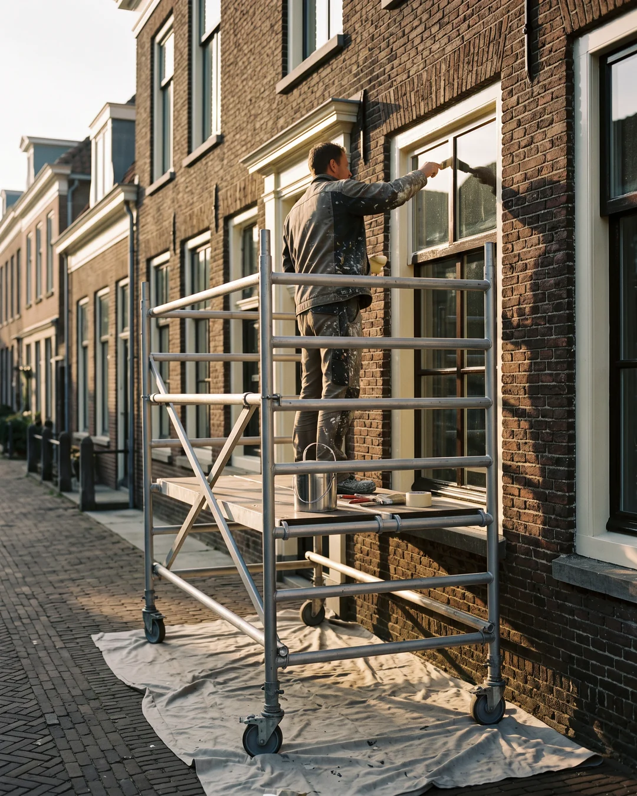
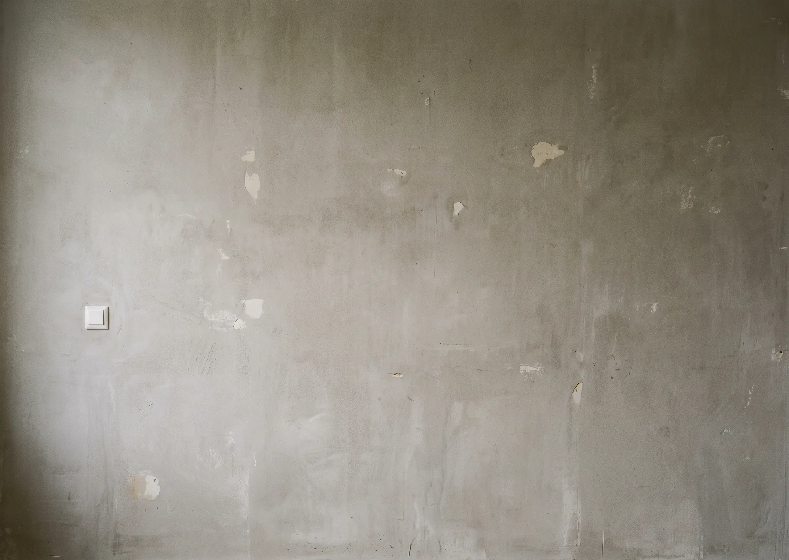
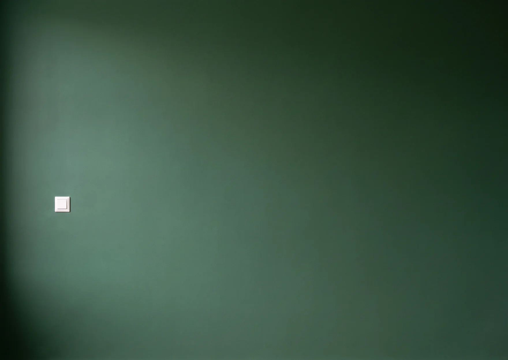
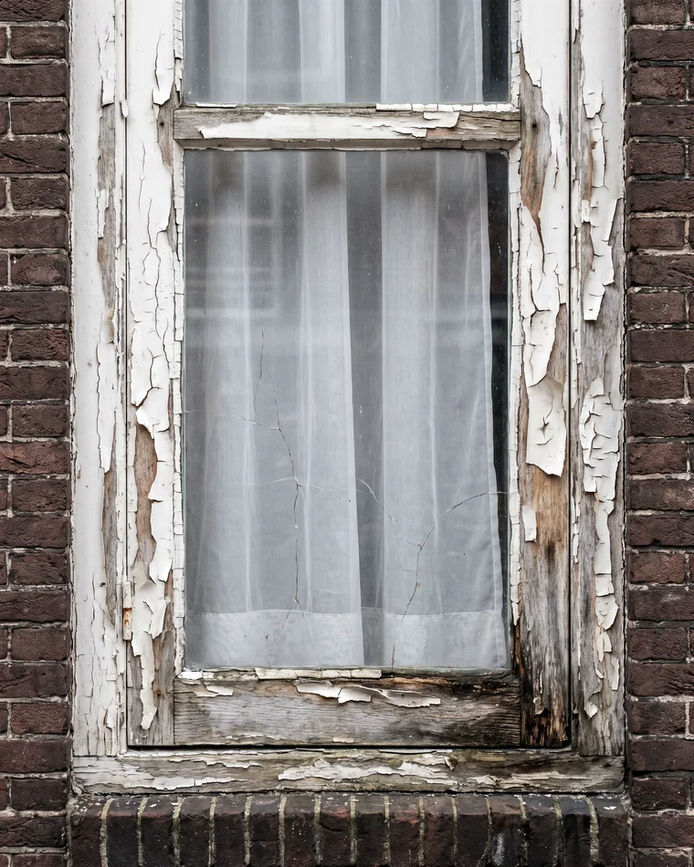
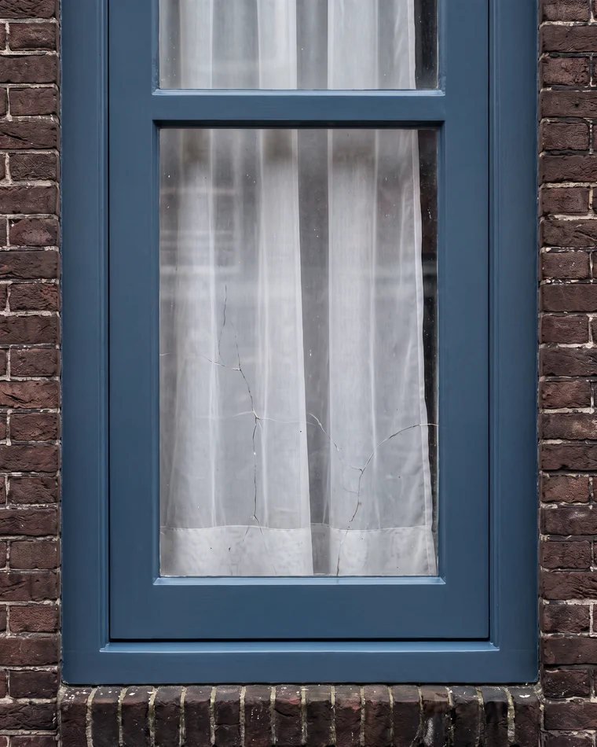
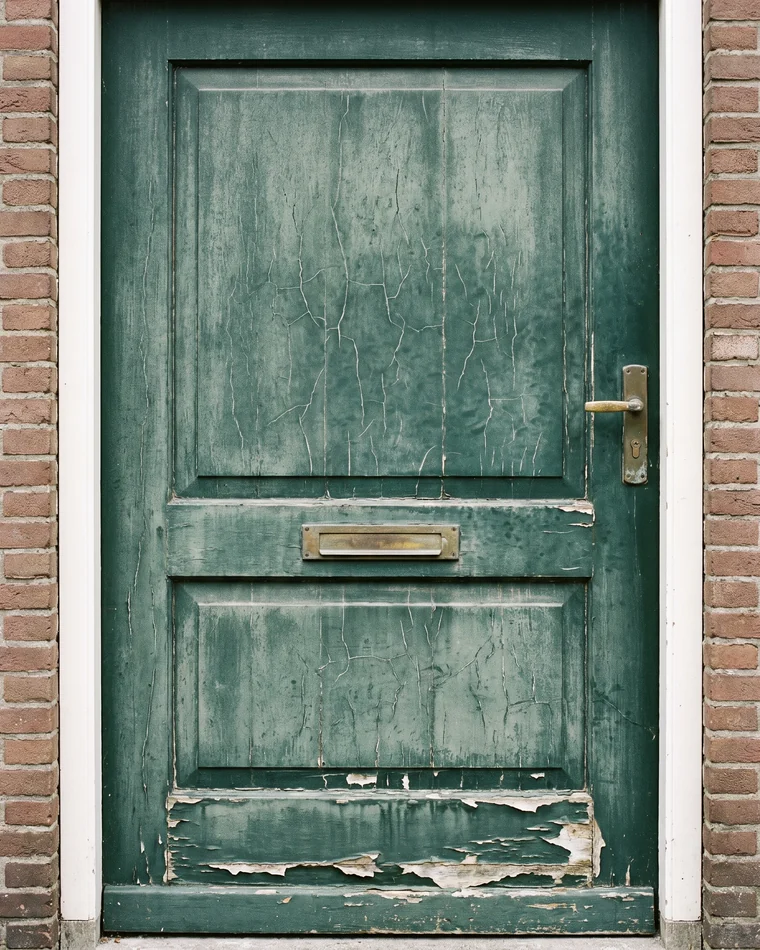
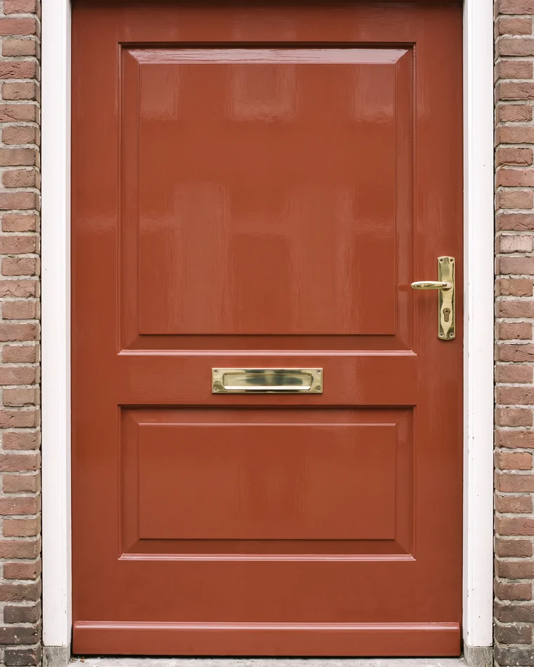

Fictief voorbeeldbedrijf, gebouwd door Belvanger om te laten zien wat mogelijk is. Zelf zo'n website laten bouwen →
Schildersbedrijf · regio Groningen
Binnen en buiten, met de voorbereiding waar het echt om gaat. Houtrot eerst hersteld, dan pas de kwast erover. Vaste prijs vooraf en netjes achtergelaten.



Eerst schuren, plamuren en stofvrij maken.
Daarna dekt het in één keer. Zo hoort verf te liggen.
Twee lagen, dekkend
Waar wij goed in zijn
Negen van de tien klachten over schilderwerk gaan niet over de kleur, maar over de voorbereiding. Daar besteden wij het grootste deel van de tijd aan.
Kozijnen, deuren, boeidelen en gevels. Wij werken met verf die past bij de ondergrond en de ligging, en geven zeven jaar garantie op het buitenwerk.
Zacht hout eerst uitfrezen en herstellen met epoxy, daarna schilderen. Overschilderen zonder dat te doen is geld weggooien: binnen twee jaar staat u er weer.
Wanden, plafonds en trappen. Wij dekken uw meubels en vloer af, werken op vaste tijden en laten de ruimte schoon achter.
Van glasvezel en spachtelputz tot strak sausklaar stucwerk. Ook het lastige werk: een plafond dat na één laag echt dekt.
Wij komen met de kleurenkaart langs en kijken naar uw licht, uw vloer en uw meubels. Kleur kiezen op een scherm gaat bijna altijd mis.
Goed schilderwerk zie je niet. Slecht schilderwerk zie je meteen.
Familiebedrijf sinds 1998 · vaste prijs vooraf
Ons werk
Straks staan hier de echte voor- en na-foto's van úw projecten. Bij schilderwerk verkoopt dat verschil zichzelf.


Voor Kozijnen vernieuwd · Haren

Voor Voordeur in de lak · GroningenKleuradvies
Kleur kiezen op een telefoonscherm gaat bijna altijd mis: uw licht is anders, uw vloer is anders. Wij komen langs met de kaart, houden hem tegen uw wand en kijken mee op het uur van de dag dat u er zit.
Over ons
Van Rijn Schilderwerken is een familiebedrijf uit Groningen. Wij werken met een vaste ploeg, dus u krijgt geen wisselende gezichten in huis. We spreken vooraf een vaste prijs af, komen op de afgesproken dagen, en lopen aan het eind samen met u langs het werk voordat we de laatste doek opruimen.
Bel voor een vrijblijvende opname. Wij komen kijken, meten op en sturen u een vaste prijs. Geen nacalculatie.
050 - 211 34 60Ma t/m vr 7.30 - 17.00 uur. Buiten die tijden mag u de voicemail inspreken.
of laat uw gegevens achter
Voorbeeldformulier, dit verstuurt niets. Op uw eigen website komt elke aanvraag direct binnen in uw dashboard, met een melding op uw telefoon.